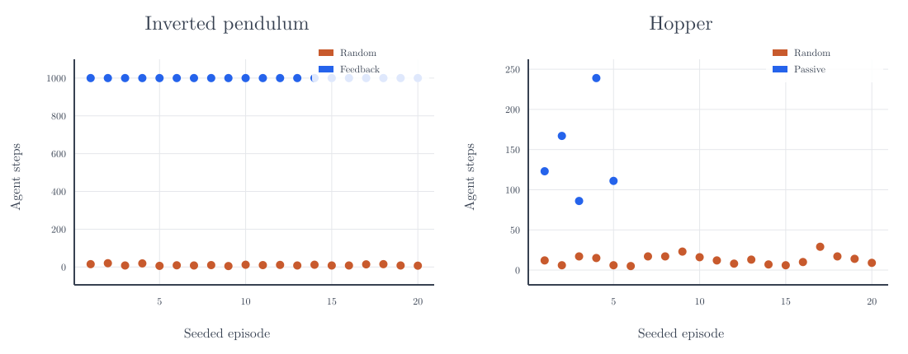

InvertedPendulum and Hopper with vsim
InvertedPendulum and Hopper with vsim
The authored vsim scenes define the links, colliders, joints, and actuator axes. Datamunge wraps the Jolt simulation in the same environment interface used by its other tasks. Reset restores the authored state and adds a seeded perturbation to the coordinates and rates. Natural termination and a time-limit truncation have separate flags.
InvertedPendulum advances two 20 ms substeps per action. A slider pushes the cart, and a pole angle beyond 0.2 radians ends the episode. The feedback controller uses the pole angle and angular rate, together with the cart position and velocity. Hopper advances four 2 ms substeps. Its three hinge torques steer the thigh, leg, and foot. It earns forward speed plus a survival reward, minus a squared control cost. The episode ends when the torso becomes too low or too tilted, or its state reaches the task’s health bounds.
The experiment compares random and feedback control for the pendulum, and random and zero torques for Hopper. The renderer follows the cart or torso. The plot shows how long each policy keeps the task healthy.
Run with the vsim SDK
From a Datamunge C++ docs shell with ffmpeg and a Vulkan driver,
build the upstream vsim SDK and use the original scene files.
upstream="$HOME/projects/tflow_examples"
vsim=$(nix build --no-link --print-out-paths "$upstream#vsim-sdk")
export DM_VSIM_SCENES="$upstream/data/vsim"
export PKG_CONFIG_PATH="$vsim/lib/pkgconfig:${PKG_CONFIG_PATH:-}"
vsim_flags=$(pkg-config --cflags --libs vsim-renderer | sed -E 's@ /nix/store/[^ ]+-glibc-[^ /]+/lib/libm\.so@@g; s@ -Wl,-rpath,/nix/store/[^ ]+-glibc-[^ /]+/lib@@g')
export DM_VSIM_TASK_FLAGS="$vsim_flags -std=c++23 -DDATAMUNGE_ENABLE_VSIM_TASKS -lm"
mep-mepml run docs/mepml/nn/6_deep_reinforcement_learning/6.1_environments/vsim_articulated_tasks.mepml#include <dm/dm.hpp>
#if defined(DATAMUNGE_ENABLE_VSIM_TASKS)
#include <vsim/renderer.hpp>
#endif
int main() {
#if defined(DATAMUNGE_ENABLE_VSIM_TASKS)
namespace e=dm::rl::environments;
const auto* path=std::getenv("DM_VSIM_SCENES");
if (!path || !*path) throw std::runtime_error("set DM_VSIM_SCENES to the authored scene directory");
const auto scenes=std::filesystem::path(path);
e::VsimTaskEnv pendulum(e::VsimTask::InvertedPendulum,scenes/"inverted_pendulum.json");
e::VsimTaskEnv hopper(e::VsimTask::Hopper,scenes/"hopper.json");
const auto feedback=[](const e::Obs& o) {
const auto unit=std::clamp(5.f*o[1]+o[3]+.2f*o[0]+.3f*o[2],-1.f,1.f);
return e::Action({-3.f+(unit+1)*.5f*6.f});
};
const auto zero=[](const e::Obs&) { return e::Action({0.f,0.f,0.f}); };
const auto run=[](e::Env& env,int count,auto policy,std::string_view label) {
std::vector<double> lengths;
float total=0,min=std::numeric_limits<float>::infinity(),max=-min;
for (int i=0;i<count;++i) {
auto observation=env.reset(i);
float reward=0;
int length=0;
while (true) {
auto result=env.step(policy(observation));
reward+=result.reward;
++length;
if (result.done()) break;
observation=std::move(result.obs);
}
total+=reward;
min=std::min(min,reward);
max=std::max(max,reward);
lengths.push_back(length);
}
const float mean=std::accumulate(lengths.begin(),lengths.end(),0.f)/count;
std::println("{}: reward {:.2f} [{:.2f}, {:.2f}], mean length {:.1f}",label,total/count,min,max,mean);
return lengths;
};
std::mt19937_64 pendulum_rng(0),hopper_rng(0);
const auto pendulum_space=pendulum.action_space(), hopper_space=hopper.action_space();
const auto pr=run(pendulum,20,[&](const auto&){return pendulum_space.Sample(pendulum_rng);},"Pendulum random");
const auto pf=run(pendulum,20,feedback,"Pendulum feedback");
const auto hr=run(hopper,20,[&](const auto&){return hopper_space.Sample(hopper_rng);},"Hopper random");
const auto hz=run(hopper,5,zero,"Hopper passive");
if (!std::all_of(pf.begin(),pf.end(),[](double length){return length==1000;}))
throw std::runtime_error("pendulum feedback did not reach the horizon");
std::filesystem::create_directories("build");
std::filesystem::create_directories("figures");
const auto publish=[](const std::string& file) {
std::filesystem::copy_file("build/"+file,"figures/"+file,std::filesystem::copy_options::overwrite_existing);
};
auto plot=dm::graphics::RLayout::create(1,2);
const auto panel=[&](const std::vector<double>& a,const std::vector<double>& b,const char* label,const char* title) {
auto chart=dm::graphics::RPlot::create();
chart.points(dm::nn::arange(1,a.size()+1).to_vector<double>(),a,"Random",{200,90,45},5)
.points(dm::nn::arange(1,b.size()+1).to_vector<double>(),b,label,{37,99,235},5)
.title(title).x_label("Seeded episode").y_label("Agent steps");
plot.add(chart);
};
panel(pr,pf,"Feedback","Inverted pendulum");
panel(hr,hz,"Passive","Hopper");
plot.size(1100,430).fit_panels().save_svg("build/vsim_articulated_tasks.svg");
publish("vsim_articulated_tasks.svg");
constexpr int width=640,height=400;
vsim::Renderer renderer({.width=width,.height=height,.offscreen=true});
const auto film=[&](e::VsimTaskEnv& env,auto policy,const std::string& file,
int seed,int cap,int stride,int fps,bool is_pendulum) {
dm::cad::VideoWriter video("build/"+file,width,height,fps);
vsim::Image image{};
dm::cad::RenderResult frame;
frame.width=width;
frame.height=height;
vsim::RenderView view;
const auto draw=[&] {
const auto x=env.root_position().x;
const auto offset=is_pendulum?glm::vec3(0,.55f,3.2f):glm::vec3(.8f,1.3f,4.2f);
view.transform.position=glm::vec3(x,0,0)+offset;
const auto target=glm::vec3(x+offset.x,is_pendulum?.15f:.75f,0);
view.transform.rotation=glm::quatLookAtRH(glm::normalize(target-view.transform.position),glm::vec3(0,1,0));
view.camera.vertical_fov=is_pendulum?40:38;
if (!renderer.draw(env.scene(),&view)) throw std::runtime_error("vsim draw failed");
renderer.capture(image);
frame.rgba.swap(image.rgba);
video.append(frame);
frame.rgba.swap(image.rgba);
};
auto observation=env.reset(seed);
draw();
int steps=0;
float total=0;
for (int i=1;i<=cap;++i) {
auto result=env.step(policy(observation));
total+=result.reward;
++steps;
if (i%stride==0 || result.done()) draw();
if (result.done()) break;
observation=std::move(result.obs);
}
video.finish();
publish(file);
std::println("{}: {} steps, return {:.1f}, {} frames",file,steps,total,video.frames_written());
};
film(pendulum,feedback,"vsim_pendulum_feedback.mp4",7,288,1,25,true);
film(hopper,zero,"vsim_hopper_passive.mp4",3,1000,2,62,false);
std::mt19937_64 random(1);
const auto random_torque=[&](const e::Obs&) {
std::uniform_real_distribution<float> uniform(-1,1);
return e::Action({uniform(random),uniform(random),uniform(random)});
};
film(hopper,random_torque,"vsim_hopper_random.mp4",5,1000,2,62,false);
#else
std::puts("Set DM_VSIM_TASK_FLAGS and DM_VSIM_SCENES to rerun the SDK-backed experiment.");
#endif
}Pendulum random: reward 10.65 [5.00, 20.00], mean length 10.6 Pendulum feedback: reward 1000.00 [1000.00, 1000.00], mean length 1000.0 Hopper random: reward 10.10 [3.47, 24.63], mean length 12.9 Hopper passive: reward 136.68 [83.12, 209.92], mean length 145.2 vsim_pendulum_feedback.mp4: 288 steps, return 288.0, 289 frames vsim_hopper_passive.mp4: 239 steps, return 209.9, 121 frames vsim_hopper_random.mp4: 7 steps, return 2.7, 5 frames
